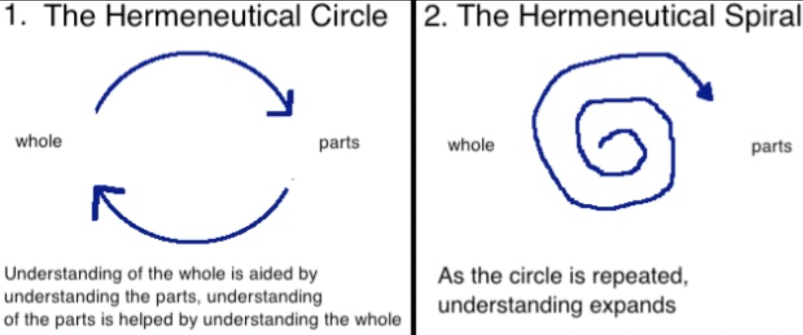
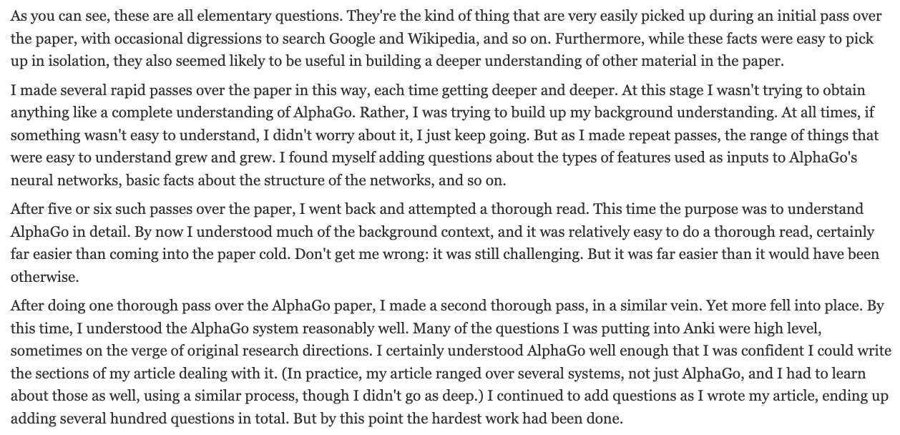

(See also Improve Systems)
Learning is the thing that I'm the most unusually good at. I got into "learning how to learn" by doing the online course of the same name, and since then I've developed a learning tool stack that I'm really pleased with.
In brief:
E.g., "I want to do a deep dive on John Boyd", "I want to learn about AI safety".
I'll typically make a Beeminder and set up how many hours per week I want to commit to the project. I might also make a quick strategy document too, clarifying things like the purpose, success criteria, the "Why" of the project, how I might fail, etc. I might also make a Fatebook.io prediction like p(I'm still excited about learning [subject] in 1 month), as I can definitely fall prey to recency bias!
Might use Perplexity.ai to find the most highly recommended starting points, e.g. the best book/textbook.
A tool that reads text aloud, both via PDFs and the Chrome extension. If I generate a Deep Research review on a topic, I'll then export the PDF, put it into Speechify, put it on my reMarkable tablet, and then read on the reMarkable whilst Speechify reads it out loud to me. This massively reduces time required to read, but actually IMO the most profound benefit isn't increased reading speed, it's the ability to read for much longer periods because you use significantly less willpower when something else sets the pace for you.
As discussed in the Speechify section. It's a really great A4-ish sized e-ink reader. Great for highlighting PDFs, scribbling in the margins. I really like how "dumb" it is, although sometimes I do wish I had an iPad. It's great for not adding to eye strain though, no backlight, e-ink screen.
A key failure mode is making flashcards too early, e.g. after you've only read 1 chapter, or watched an introductory lecture. If it's a topic that you don't know anything about, you won't have anything to hang the new concepts onto. So it's best to get a more broad overview first. This relates to the idea of the hermeneutic circle, where our understanding of atomic bits of information is informed by our understanding of the whole, and vice versa. So, it's good to do a bit of an "immersion" phase first, where you consume a bunch of stuff. Even if retention will be low, you're getting a general sense of the territory.
But anyway, once it is time to make flashcards, I use a prompt that I store in Espanso. I give the PDF to Gemini, and typing `:flash` pastes my custom prompt for having Gemini create flashcards. I can state how many I want, if I want them to be in depth or just surface level. This gives me a .txt file of flashcards, which I then edit in Vim (as so far AI is still pretty poor at knowing which parts of the flashcard should be initially hidden from view), and then I import into Anki.
At first, you just make basic flashcards on the level concepts, then after a few days or a week, these are very "fluent" in your brain, and you can return and make more nuanced flashcards. Michael Nielsen taught me about this, here:
(See Michael Nielsen's Augmenting Long Term Cognition.)
Last updated: